智能体记忆的组成部分
📖 中文摘要
专业术语注解
智能体记忆：Claude从经验中获得、跨会话保留并可读回的知识，不含权重改动、上下文学习与压缩梦境（dreaming）：智能体在两次会话的空闲期重放会话记录、纠正笔记并重组记忆的离线过程记忆笔记：Claude即时写下的显著性观察或已核实规则，供未来会话读取维基（记忆表征）：由Claude撰写并互相链接的页面集合，充当遍历知识库的地图上下文注入：把精简后的笔记在每次会话开始时预加载进上下文，须保持精简以免降低遵循度📄 中文全文
- 类别： 工程（Engineering）
- 来源： https://www.anthropic.com/research/components-of-agent-memory
工程（Engineering） 2026 年 11 月 6 日
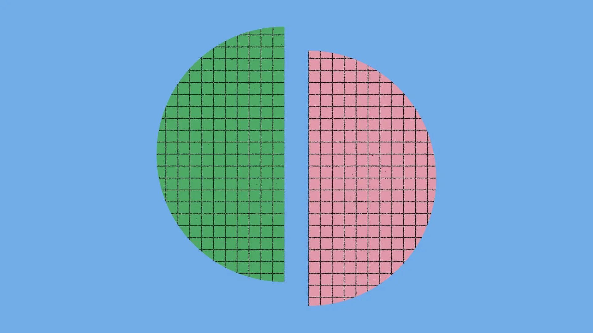
发布于 2026 年 11 月 6 日 团队 工程 主题相关文章 * 工程 2026 年 3 月 24 日 长时运行应用开发中的框架设计
阅读更多 Søren Kierkegaard曾写道，生活只能 向后 被理解，却必须 向前 去活。我们在为AI智能体设计记忆时，遇到了类似的困境。 作为人类，我们在日常生活中不断编码记忆。海马体在其中扮演核心角色，它即时捕捉经历，使记忆迅速形成并立刻可用。但只有部分经历会被巩固为长期知识。 这种巩固大多发生在大脑离线的时候。在我们睡眠时，以及在安静的休息期间，海马体会重放近期的经历。人们认为，这一过程会逐步把这些经历提炼并整合进新皮层——我们大脑中储存大部分所谓知识的部位。 智能体记忆可以采用类似的分工。智能体把大量工作记录在日志或会话记录中。Letta和UC Berkeley的研究者提出了睡眠期计算，让模型利用两次交互之间的空闲时间重新组织已有的上下文。同样的思路也能帮助智能体整理记忆：通过反思日志来纠正错误，或生成新的笔记与表征。这一过程常被称为梦境（图1）。 我们发现，梦境一直是一件有用的工具，帮助我们为Claude提供有效的记忆。在这篇文章中，我们分享我们逐渐形成的对智能体记忆的理解，并逐一介绍我们用于探索智能体记忆的若干评测（包括对梦境的运用），以及每个组成部分对记忆组织所作的贡献。
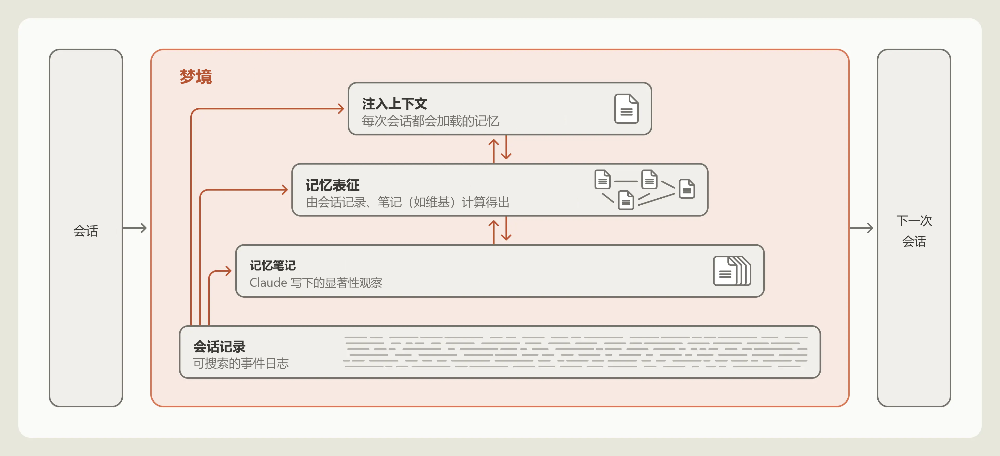
Claude可以借助梦境来组织记忆。这可以纠正错误、创建笔记、构建新的记忆表征，或决定哪些内容被预先加载到未来的会话中。记忆笔记
我们所说的「智能体记忆」，指的是Claude从经验中获得的、并在会话之间保留下来的知识——包括与用户的交互以及被分派的任务——它被保存为日后可以读取的上下文。它不包括模型学习或管理上下文的其他方式，例如改动其 权重（训练时设定的内部参数）、上下文学习（在单次对话中获得的知识），以及压缩（Claude写下的摘要，用来替换较早的对话轮次，以便它能在新的上下文窗口里继续工作）。
在人脑中，在一段经历之前、期间或之后释放的化学信号，可以把某段记忆标记为重要。在离线期间，被标记的记忆往往比未标记的记忆得到更频繁的重放。这一过程被称为 重放，有助于稳定这些记忆并把它们整合进长期记忆。
类似地，Claude可以在会话日志中即时给显著性事件打上标记，方便日后查找，也可以把它们写入记忆存储，比如一个由记忆笔记组成的文件夹（图2）。可是，在还不知道接下来会发生什么的时候，Claude又如何判断当下什么值得留意呢？
 Claude可以把笔记写入记忆。
Claude可以把笔记写入记忆。
记忆可以是对未来所需的一种预测
记忆有时是一种预测。写下一条规则，就等于智能体在预测它所描述的模式会再次出现。例如，写下一条已核实的事实，就是在预测未来某个会话中的智能体会希望直接依赖这条事实而不去反复核对。随着时间推移，Claude在做这类预测上已经变得娴熟得多。
以Continual Learning Bench（CL-Bench）1.0中的一项任务为例，这一基准衡量智能体运用记忆来处理长时程任务的能力。其中有一项任务要求Claude通过查询数据库来回答一系列问题。Claude给出答案后，会被告知正确答案，并可以写下一条记忆，帮助回答后续问题。
记忆在这里可以支撑一个学习闭环。如果Claude答错了一道题，它可以记录这次失败，就问题出在哪里提出猜想，检验这些猜想，并把发现转化成一条关于今后如何作答的规则。
我们用Claude Managed Agents运行了CL-Bench 1.0任务。Claude每回答一道题都从一个全新的会话开始，只有一处例外：它可以从一个跨会话持久保存的记忆目录中读取文件。
不同模型在建立自己的学习闭环上达到的程度各不相同。Claude Sonnet 4.6最多只能就答案为什么出错提出猜想。它的记忆目录里散落着一些文件，每个文件都列出若干未经检验的猜测。
 CL-Bench数据库任务，跨模型对比记忆与无状态基线。
Claude Opus 4.7把笔记合并成一份参考文档，并开始标注哪些事实已经核对、哪些仍未证实。Claude Sonnet 5会在评分器核对之后把每个答案标记为已确认，答错时则写下一条更正。
Claude Opus 5是这些模型中第一个真正闭合这一闭环的。它的大多数条目都包含一条规则（以及它如何知道这条规则成立）、先前问题的答案，以及关于沿途发现的陷阱的明确警示（图3）。
与Opus 5一样，Claude Opus 5.5和Claude Sonnet 5.5也都闭合了闭环，用记忆捕捉经过验证的、关于如何最好地回答未来问题的规则。有了记忆，两者的得分都与Opus 5大致相当，不过它们在没有记忆时的基线表现略高一些。
CL-Bench数据库任务，跨模型对比记忆与无状态基线。
Claude Opus 4.7把笔记合并成一份参考文档，并开始标注哪些事实已经核对、哪些仍未证实。Claude Sonnet 5会在评分器核对之后把每个答案标记为已确认，答错时则写下一条更正。
Claude Opus 5是这些模型中第一个真正闭合这一闭环的。它的大多数条目都包含一条规则（以及它如何知道这条规则成立）、先前问题的答案，以及关于沿途发现的陷阱的明确警示（图3）。
与Opus 5一样，Claude Opus 5.5和Claude Sonnet 5.5也都闭合了闭环，用记忆捕捉经过验证的、关于如何最好地回答未来问题的规则。有了记忆，两者的得分都与Opus 5大致相当，不过它们在没有记忆时的基线表现略高一些。
Claude已经学会判断显著性
我们还评测了Claude玩 Pokémon Red 的能力，这款游戏考验Claude驾驭复杂长时程任务的能力，我们用它来检验Claude对 该把什么 存入记忆的判断。每次运行开始时，我们给每个模型一个记忆文件夹，它可以在游玩过程中读取和写入（图4）。
我们比较了Claude Sonnet 3.7和Claude Fable 5各一次运行中的记忆文件夹，两者都进行到游戏约10,000步。我们注意到的一个关键差别，是两个模型认为什么值得记住。Sonnet 3.7假定一切都可能重要，不加区分地写入记忆。它的记忆文件夹里是一份遭遇档案，往往每一场战斗、每一件捡到的道具、每一个遇到的非玩家角色都单独占一个文件。最终，Sonnet 3.7在225个文件夹里写了413个记忆文件，只拿到一枚徽章（徽章标示玩家在游戏中的进度）。
相比之下，Fable 5只在两个文件夹里写了九个文件，外加一个名为global.md的顶层文件，却拿到了四枚徽章。
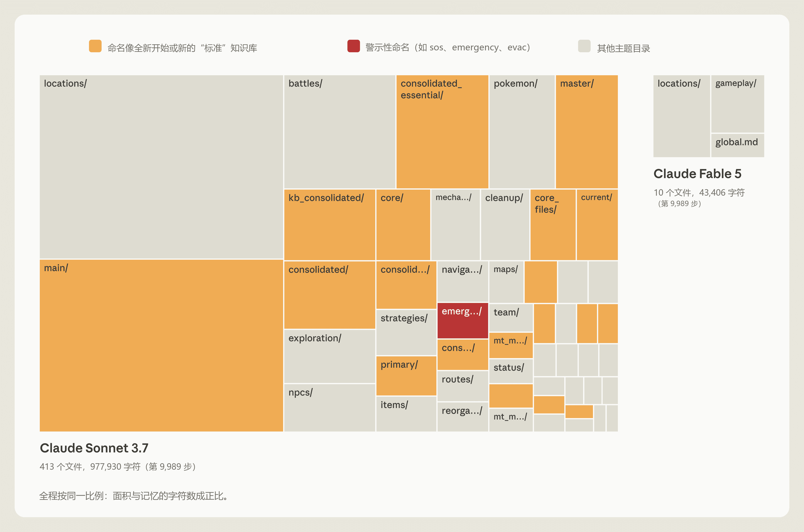
Claude在玩Pokémon时，Sonnet 3.7与Fable 5的记忆目录对比。 Sonnet 3.7的做法之所以成问题，主要是因为Pokémon的游戏状态一直在变——Sonnet 3.7那份详尽的记录不断过时。结果，随着Claude推进，它不得不花更多时间和资源去翻检自己的记忆，而不是去玩游戏。例如，在大约第10,000步时，Sonnet 3.7开始建立第四批「master」记忆文件夹。在接下来的17步里，它新建了六个文件、删除了九个，却没有在游戏里采取任何行动。 Fable 5的做法，是把记忆用于游戏没有明说的事情。Sonnet 3.7写进记忆的某些信息——比如玩家有多少钱、玩家在地图上的位置——每一回合都能直接从屏幕上读到，存下来是多余的。相比之下，关于策略、计划和经过检验的规则，只有在Claude自己推演出来时才存在，而且除非Claude把它们写下来，否则就会消失。 Fable 5据此组织自己的记忆。它的global.md文件像一个仪表盘，记录当前目标、一份预先写好的攻略道馆（赢得徽章的挑战）的计划，以及模型自己使用记忆的规则。locations文件夹存放穿越特定路线的计划，gameplay文件夹则存放基于它对游戏机制的理解所形成的策略。例如，在连续七个Poké Ball都没能捕捉到一只Magikarp（最容易捕捉的Pokémon之一）之后，Claude写道：「如果连续3个以上的球失败，就改变时机（在菜单步骤之间多按几次「等待」）——这样做了之后立刻就捕捉成功了。」
凭借小得多的记忆文件夹，Fable 5在游戏中的进展远远超过Sonnet 3.7。Opus 5.5采取了类似的思路：它只保留一个小小的记忆笔记文件夹，记录当前目标和下一步，边玩边改写，最终通关了游戏。
引导Claude写记忆
我们发现，告诉Claude记忆是做什么用的会有帮助，但不要告诉它 该怎样 使用。在CL-Bench上，我们只告诉Claude有一个记忆文件夹可用。这点笼统的指引就足以让Opus 4.7和Opus 5有效地使用记忆，并给两者带来明显的性能提升（图3）。 我们也测试了给模型设定关于该往记忆里写什么的具体规则，每次测试一条规则。我们把每条规则下各模型从记忆中获得的收益，与不设规则时的收益作了比较。当我们设定「只记录失败」这条规则时，Opus 5和Opus 4.7都失去了记忆带来的大部分性能提升（图5右）。对更强的模型来说，让它们自由判断显著性，比事先设定固定规则更有效，而那些规则最终反而可能削弱表现。
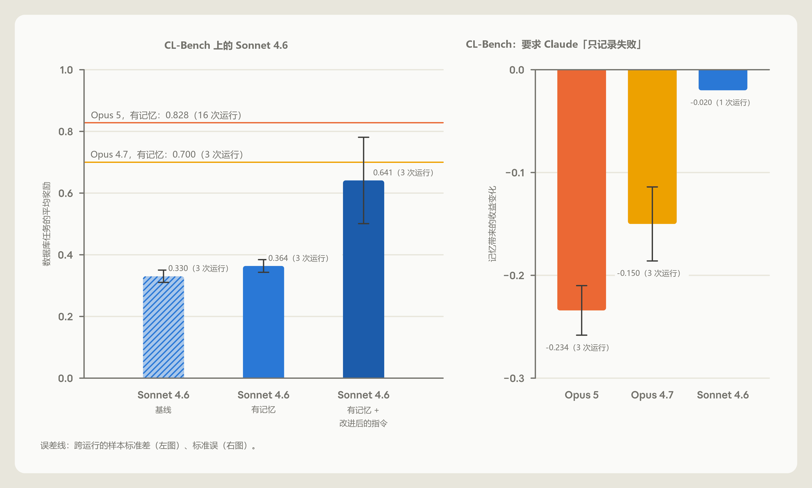
左图：Sonnet 4.6在CL-Bench数据库任务上，有无提示引导记忆使用的表现对比。右图：当被要求只记录失败时，各模型从记忆中获得的收益变化幅度。 我们还注意到，引导对较老的模型帮助最大。例如，Sonnet 4.6常常不读取记忆目录里的文件，也不会去检验自己关于答案为何出错的猜想。 在这种情况下，提示Claude在作答前先读取记忆文件、随后明确检验自己的猜想，几乎让它的基准得分翻了一倍（图5左）。Sonnet 5会自主做到这一点。在没有任何提示的情况下，它10次里有9次会在作答前读取记忆。相比之下，Sonnet 4.6做到这一点的次数不到一半。 对于前沿的Claude模型，我们通常只给出简单的指引：当有人要求，或当某件事明显值得记住时，就创建记忆笔记，而把这个判断留给Claude自己。梦境可以纠正记忆
由于Claude是根据会话当下对显著性的判断来写记忆的，一条从一开始就写错、或随着环境变化而逐渐偏离的笔记，可能会在之后的会话里被Claude读到并信以为真。
梦境给了Claude一条途径，可以拿原始会话记录来检验自己的笔记（图6）。当Claude用Managed Agents、挂载一个记忆目录来玩Pokémon时，我们看到了一个正面的例子。
 梦境可以纠正记忆中的错误。
在游戏的一段里，玩家必须穿过Mt. Moon，这是一片洞穴系统，入口在地图西侧、出口在东侧。入口附近有一处陷阱：一道单向的崖边会把玩家摔回原来走来的那条路，而且没有明显的办法爬回去。Claude把山入口处的建筑PokéCenter当作地标，因此它会不会走下那道崖边，取决于它认为PokéCenter在山的哪一侧。
某一刻，Claude错误地记下PokéCenter在东侧。当它走出PokéCenter时，它宣称「Mt Moon在我身后」，并把笔记更新为「Mt Moon已完成」。但Mt. Moon并不在它身后。几步之后，Claude越过崖边，落回它来时的那条路（图7）。它的导航工具没有显示这处落差，于是Claude得出结论：「我往西走得太远了」，还认定自己一直都在正确的一侧。其实并没有。
梦境可以纠正记忆中的错误。
在游戏的一段里，玩家必须穿过Mt. Moon，这是一片洞穴系统，入口在地图西侧、出口在东侧。入口附近有一处陷阱：一道单向的崖边会把玩家摔回原来走来的那条路，而且没有明显的办法爬回去。Claude把山入口处的建筑PokéCenter当作地标，因此它会不会走下那道崖边，取决于它认为PokéCenter在山的哪一侧。
某一刻，Claude错误地记下PokéCenter在东侧。当它走出PokéCenter时，它宣称「Mt Moon在我身后」，并把笔记更新为「Mt Moon已完成」。但Mt. Moon并不在它身后。几步之后，Claude越过崖边，落回它来时的那条路（图7）。它的导航工具没有显示这处落差，于是Claude得出结论：「我往西走得太远了」，还认定自己一直都在正确的一侧。其实并没有。
 一条被纠正的记忆笔记改变了Pokémon里的结局。用未纠正的笔记时，Claude说「Mt Moon在我身后」，朝下一座城市走去，最后又回到它来时的那条路。而用经过梦境纠正的笔记时，它说「现在我需要找到Mt Moon的洞口重新进去」，于是走回了洞里。
接着我们测试了梦境能否帮助Claude避开这个陷阱。我们对那个记错了PokéCenter位置的记忆文件夹运行了梦境：Claude拿笔记与会话记录对照，发现了错误并改写。会话记录给了Claude一个可以用来核验记忆的事实基准。带着纠正后的记忆笔记，Claude径直回到Mt. Moon，最终抵达了Cerulean City。
在带着未纠正笔记的那次运行里，Claude三次摔回早先那条路。第三次失败后，Claude似乎打算放弃，写道「我要停下来，不再一直绕圈了」。我们设置里的自动回复指示它继续。于是它照做，一路回到了山之前的城镇Pewter City，指望在那里治疗和补货。这次运行结束时，Claude始终没能抵达Cerulean City。
一条被纠正的记忆笔记改变了Pokémon里的结局。用未纠正的笔记时，Claude说「Mt Moon在我身后」，朝下一座城市走去，最后又回到它来时的那条路。而用经过梦境纠正的笔记时，它说「现在我需要找到Mt Moon的洞口重新进去」，于是走回了洞里。
接着我们测试了梦境能否帮助Claude避开这个陷阱。我们对那个记错了PokéCenter位置的记忆文件夹运行了梦境：Claude拿笔记与会话记录对照，发现了错误并改写。会话记录给了Claude一个可以用来核验记忆的事实基准。带着纠正后的记忆笔记，Claude径直回到Mt. Moon，最终抵达了Cerulean City。
在带着未纠正笔记的那次运行里，Claude三次摔回早先那条路。第三次失败后，Claude似乎打算放弃，写道「我要停下来，不再一直绕圈了」。我们设置里的自动回复指示它继续。于是它照做，一路回到了山之前的城镇Pewter City，指望在那里治疗和补货。这次运行结束时，Claude始终没能抵达Cerulean City。
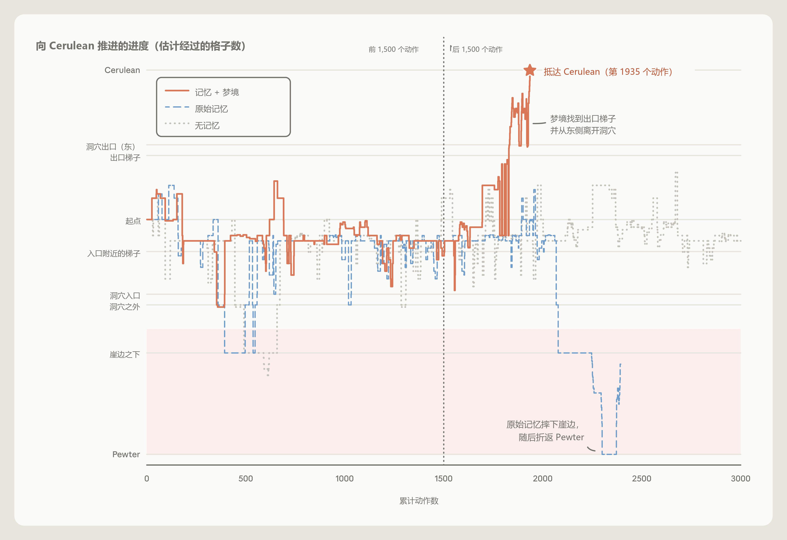
梦境纠正了记忆，Claude走回洞里并抵达了下一座城市。带着未纠正笔记（「Raw memory」）的那次运行始终没能翻过那座山，完全没有记忆的那次运行也一样。梦境可以构建新的记忆表征
借助梦境，Claude可以构建有助于在记忆中导航的表征（图9）。它使用的一种记忆表征叫作维基：由Claude撰写并维护的一组页面，把Claude对某个主题的了解汇集起来，并链接到其他笔记。这些链接实际上为Claude提供了一张地图，让它能够梳理自己的记忆，并在需要时高效地找到相应内容。
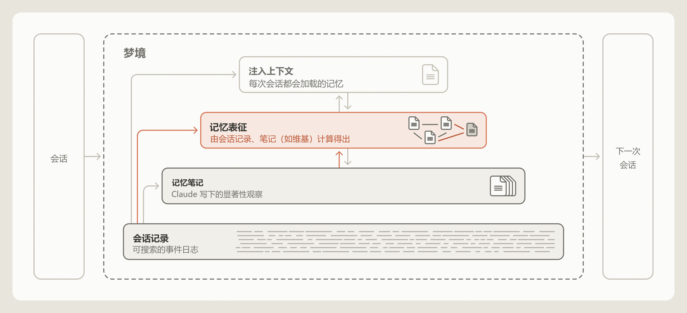
梦境可以构建记忆表征。 维基之类的表征，可以帮助Claude遍历它不断膨胀的知识库。我们用一批内部文档语料探究了维基作为记忆表征的收益——约350,000个文件、大约420M tokens——来自我们在五月收购的软件公司Stainless。我们围绕这批语料制作了包含25个问题的评测集，并给Claude一个搜索工具去探索它。我们还指示Claude用梦境基于这些文件构建一份维基。在128个会话中，我们提示Opus 5智能体去探索文件、撰写或更正相互链接的维基页面、合并重复项，并对照来源核查各项论断。 每个会话都建立在此前会话中智能体取得的进展之上，并用一个共享日志来协调工作。当我们把梦境从两个会话扩展到128个时，在这25个问题上达到的评分标准比例从13%增长到48%（图10）。 Claude是逐步构建维基的。创建出最初的维基后，它会用随后几轮梦境来增补、编辑或删减。在梦境的早期轮次里，Claude的知识像一名新员工，仅凭维基回答问题的能力有限。它梦得越多，知识地图就越丰富，渐渐像一名经验丰富的员工。在测试中我们发现，当我们同时给它一个搜索工具时，维基对Claude的帮助最大。当它同时使用搜索和维基时，随着维基变大，Claude的总分从54%升到61%，而只用搜索工具时是53%。只用维基回答问题时，Claude的最好成绩是48%。同时使用搜索和维基，每题还能省下大约20,000 tokens。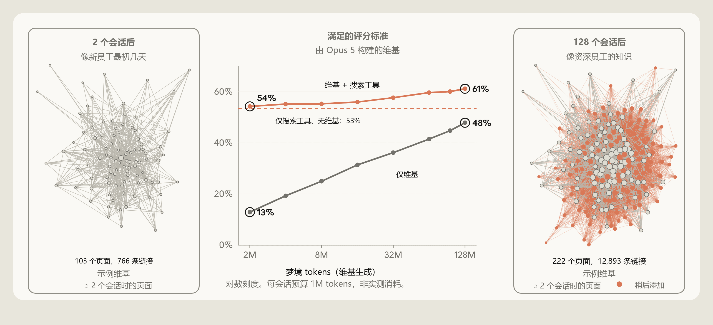
中图：随着Claude在连续会话中构建维基，它在一批公司文档语料的25个问题上的得分。左图与右图：两个会话和128个会话之后的一份示例维基；每个点是一个页面，线条连接相互链接的页面。 我们想测试哪类任务能从Claude拥有维基中受益。为此，我们使用了Harvey LAB基准，以及一批关于一桩并购的文档。该基准给Claude一组文档，要求它据其内容生成一份法律摘要，再按一组标准给摘要评分。也许不如让Claude跑一局Pokémon那么有趣，但这些评测为我们提供了多样化的文档集合来构建维基。 我们指示Claude依据这些文档构建一份维基，然后让Claude分别基于维基和基于直接的文件搜索来回答问题（关于并购）或生成法律摘要（LAB基准）。其中一项测试问了24个关于并购的问题（图11左），一半以上需要Claude跨多个文档查找信息，许多还需要Claude作出判断或做算术。在这些题目上（红色和橙色线），Claude查阅维基时得分87%，而只用搜索时是73%。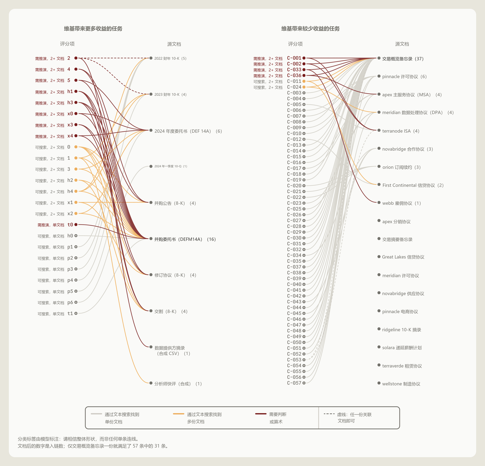
每个面板左边列出评分项，右边列出满足每一项所需的源文档。左图：关于一桩并购的24个问题，大多可通过查阅公开文件回答；一半以上的评分项需要综合多个文档的信息。右图：一项维基未带来明显收益的LAB任务；大多数评分项都能从单一文档中得到满足。 在另一些情况下，维基就没那么有用了。在一项LAB任务上（图11右），摘要的评分项往往用一次文本搜索就能从单一文档里找到，维基相对搜索没有带来明显提升。在另一项LAB任务上，维基甚至长得比文档本身还大（图12）。就像Borges那篇只有一段的短篇《论科学的精确性》里的制图师，画出了一张细致到与所描绘的帝国一样大的地图，Claude也做出了一份极其详尽、实际上什么都没抽象的维基。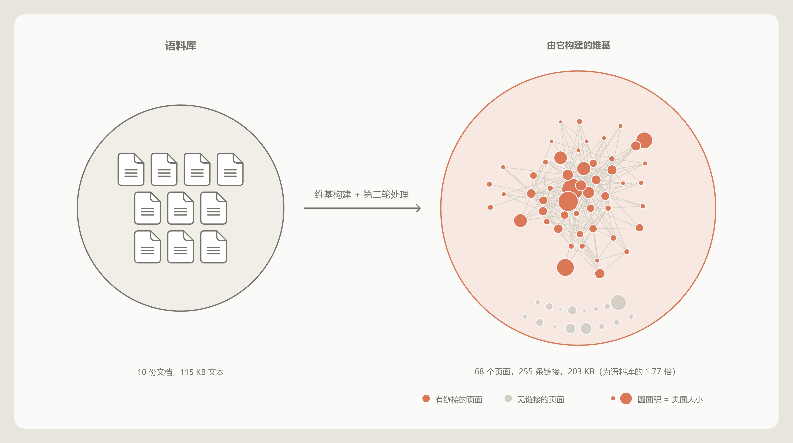
维基长得比原始文件还大。梦境可以把笔记提升到记忆层级的更高处
梦境还能把笔记浮到记忆层级的顶端，智能体框架可以在每次会话开始时把它们预先加载进Claude的上下文（图13）。这意味着Claude不必去搜索它们，甚至不必知道有什么可搜。
把记忆提升到新会话（一种 上下文注入）必须谨慎。被注入的记忆会占用宝贵的tokens，而一条错误的笔记可能被带进每一次会话。加载一条笔记也不能保证Claude会照着做：我们关于Claude Code的文档就提醒，指令文件越长，遵循度越低。因此记忆层级的顶层必须保持相对精简，而梦境在这里的很大一部分工作，正是维持这种精简——把一些细节下移到层级更低的层，只留下链接。
Claude Code的自动记忆以同样的方式让注入层保持精简，由Claude在会话期间维护。Claude并不会把所有自动记忆都加载进每次会话的上下文窗口，它只加载MEMORY.md的前200行或25 KB。这段开头相当于一个索引，告诉Claude自己知道什么、去哪里找。
 梦境可以写入记忆层级的顶端。注入上下文会在每次会话中加载，而它下面的各层则在Claude需要时被读取或搜索。
梦境可以写入记忆层级的顶端。注入上下文会在每次会话中加载，而它下面的各层则在Claude需要时被读取或搜索。
梦境可以让记忆聚焦于特定目标
梦境还能影响记忆生长的方式。例如，像Claude Duet这样的助手，往往受益于围绕所协助的那个人来组织记忆，而梦境可以被调校成为某个特定目标服务来构建记忆。
指引记忆如何生长的指令因任务而异，用来告诉Claude哪些信息才真正重要。例如，LAB基准里有一项任务模拟一次公司收购，并提供一组合同；摘要的评分依据是它是否准确描述了合同条款。
我们一开始用的是生成维基的基础指令，并没有告诉Claude 该怎样 使用维基。这项任务高度依赖合同条款。在构建维基的过程中，几个智能体同时往一张共享的合同条款表里写入（图14左）。
 指令改动前后，有多少条被评分的合同事实进入了维基。左图：几个智能体写同一个共享页面，57条事实中保留了41条。右图：每份合同由一个智能体负责，各自写自己的页面并逐字引用条款，57条中的57条事实全部保留。
结果得到的是一份缺了关键事实的维基。我们给依据这份维基生成的摘要评分时，Claude只涵盖了57条事实中的41条（72%）。排查问题出在哪里时，我们发现那张共享表对合同条款的概括很糟糕，还漏掉了其中一些，原因是智能体互相覆盖了彼此的工作。
合同条款是维基里最重要的部分，可指令里并没有说明这一点。为了找到更好的指令，我们跑了一个循环：Claude反思自己的失败，提出对指令的修改，再重新构建维基。这个循环让Claude发现了遵循合同条款有多重要，并据此改写了构建维基的指令。
每份合同在维基里都有了属于自己的页面，由单个智能体撰写，逐字引用条款，而不是把它们概括进一张共享表。当我们给依据这份改进后的维基生成的摘要评分时，100%的评分项都得到了满足，高于此前的72%。
指令改动前后，有多少条被评分的合同事实进入了维基。左图：几个智能体写同一个共享页面，57条事实中保留了41条。右图：每份合同由一个智能体负责，各自写自己的页面并逐字引用条款，57条中的57条事实全部保留。
结果得到的是一份缺了关键事实的维基。我们给依据这份维基生成的摘要评分时，Claude只涵盖了57条事实中的41条（72%）。排查问题出在哪里时，我们发现那张共享表对合同条款的概括很糟糕，还漏掉了其中一些，原因是智能体互相覆盖了彼此的工作。
合同条款是维基里最重要的部分，可指令里并没有说明这一点。为了找到更好的指令，我们跑了一个循环：Claude反思自己的失败，提出对指令的修改，再重新构建维基。这个循环让Claude发现了遵循合同条款有多重要，并据此改写了构建维基的指令。
每份合同在维基里都有了属于自己的页面，由单个智能体撰写，逐字引用条款，而不是把它们概括进一张共享表。当我们给依据这份改进后的维基生成的摘要评分时，100%的评分项都得到了满足，高于此前的72%。
梦境可以填补单次会话留下的空白
Claude写记忆笔记时，只能看到 那一次 特定会话里的上下文。而梦境可以跨许多会话检索，找出共同模式，或纠正共通的错误。 在为LAB基准构建维基时（示例见图14），Claude有时会链接到尚未创建的页面。第二轮梦境补上了许多这样的缺口。在一项任务上（图15），梦境发现维基里有九条指向某个不存在页面的链接，把它们重新指向同一份文档已有的页面。它还新增了三个页面（包括一个索引）来完善维基。
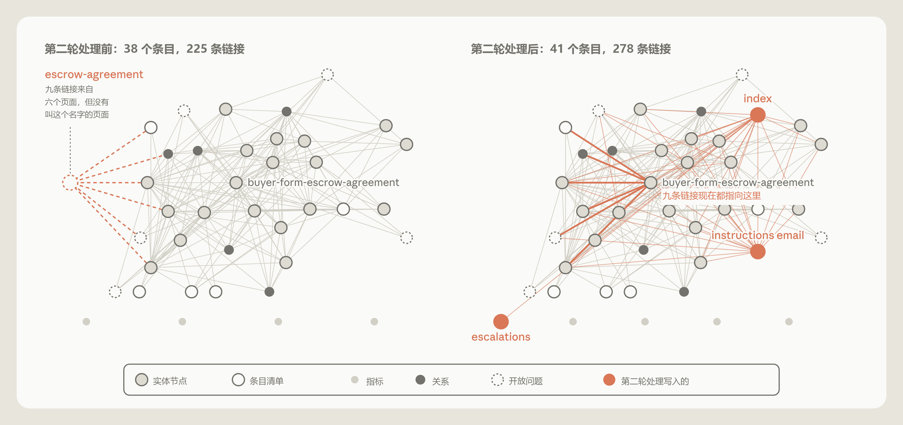
第二轮梦境前后的维基对比。向后思考，向前展望
关于如何为智能体设计记忆系统，还有许多开放问题。其中之一，是Claude应该什么时候创建记忆。当Claude处理一项任务时，它可以写入记忆存储（例如文件夹、文件或数据库），在源头捕捉显著性，让重要细节立刻可供未来的轮次或会话使用。但当下记笔记，必然会把Claude的注意力从主任务上拉开。相比之下，梦境可以把记忆创建推到后台，但梦境产出的任何结果未必能被Claude立刻取用。 另一个问题，是如何让记忆可靠地保持最新。Claude可能作出错误的预测，或者把从一开始就写错的规则记进记忆；记忆也可能随着环境变化而漂移、变得无关。梦境是修正这些错误的一种方式（图8），但它需要算力。让Claude持续核查 全部 记忆，也许并不现实。更重要的或许是把梦境聚焦在那些可能变化的信息上，或者仔细调校梦境的节奏（例如依据记忆被访问的频率）。 把会话记录检索当作Claude记忆的基础，也是一个合理的思路。把表征（例如维基）与搜索结合起来（图10），有时确实有效。但Claude需要消耗算力来维护记忆表征，并确保它们不会积累错误或幻觉。 尽管Claude对显著性的判断已经进步，但没有哪个模型能真正知道未来轮次里会发生什么。梦境给了Claude一个 向后 回望的机会，用算力来组织记忆、纠正错误，并维护那些让未来会话能更顺畅取用记忆的表征。随着Claude变得更强，记忆系统也会演进，而在设计Claude的记忆系统这件事上，我们仍有许多要学。 欢迎查阅我们的cookbook：梦境入门与知识维基。
作者与致谢
致谢
本文由Lance Martin撰写，Caitlin Love、Tom Chivers、Rebecca Hiscott、Jake Eaton和Blake Wilson提供编辑指导。感谢Barry Zhang、Theodora Chu、Daliang Li、Mahesh Murag、Jake Noble、Ravi Trivedi、Tina Vachovsky、Brad Abrams、Henry de Valence、Jeremy Fox、Matt Bell、Allen Li、Chris Gorgolewski、Eugene Yan、Artur Renault、Wei Zhang和Kevin Chen的有益讨论与贡献，也感谢David Hershey带来Claude Plays Pokémon。插图由Monika Tuchowska绘制。
▸ 英文原文（点击展开）
The components of agent memory
- Date: 2026-11-06
- Source: https://www.anthropic.com/research/components-of-agent-memory
The components of agent memory
Published Nov 6, 2026 Team Engineering Topics
Related articles * Engineering Mar 24, 2026 Harness design for long-running application development
View more Søren Kierkegaard wrote that life can only be understood backward , but it must be lived forward. We’ve encountered a similar bind when designing memory for AI agents. As humans, we encode memory constantly as we go about our lives. The hippocampus plays a central role in this, capturing experiences in the moment so that memories form quickly and are immediately available. But only some experiences are consolidated into long-term knowledge. Much of that consolidation appears to happen when our brains are offline. As we sleep, and during quiet rest, the hippocampus replays our recent experiences. This is thought to gradually distill those experiences and integrate them into the neocortex—the part of our brains that stores most of what we think of as knowledge. Agent memory can use a similar division of labor. Agents capture much of their work in logs or transcripts. Researchers at Letta and UC Berkeley proposed sleep-time compute as a way for models to use idle time between interactions to reorganize their existing context. The same idea can help agents organize their memory by reflecting on logs to fix mistakes or produce new notes and representations. This process is often called dreaming (Figure 1). We’ve found that dreaming has been a useful tool for helping us give Claude effective memory. In this post, we share how we’ve come to think about agent memory and walk through several evaluations we’ve used to explore agent memory, including the use of dreaming, and what each component contributes to memory organization.
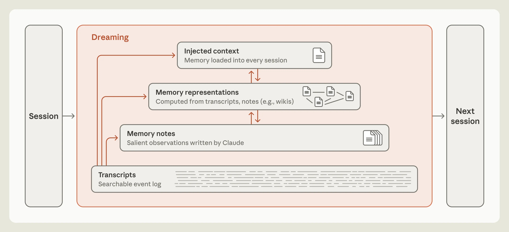
Claude can use dreaming to organize memory. This can correct mistakes, create notes, build new memory representations, or shape what’s preemptively loaded into future sessions.Memory notes
By “agent memory,” we mean knowledge that Claude gains from experience—including interactions with users and tasks it’s been assigned—and that it retains between sessions, saved as context it can read later. It excludes other ways models can learn or manage context, such as changes to their weights (the internal parameters set during training), in-context learning (knowledge gained within a single conversation), and compaction (summaries written by Claude that replace its older turns so it can continue working in a new context window). In the human brain, chemical signals released before, during, or after an experience can mark a memory as important. Marked memories tend to be replayed more often than unmarked ones during offline periods. This process, called replay , helps stabilize and integrate them into long-term memory. Similarly, Claude can tag salient events in a session log as they happen, so they’re easier to find later, or it can write them to a memory store, such as a folder of memory notes (Figure 2). But how can Claude tell what’s salient in the moment, before it knows what’s coming next?
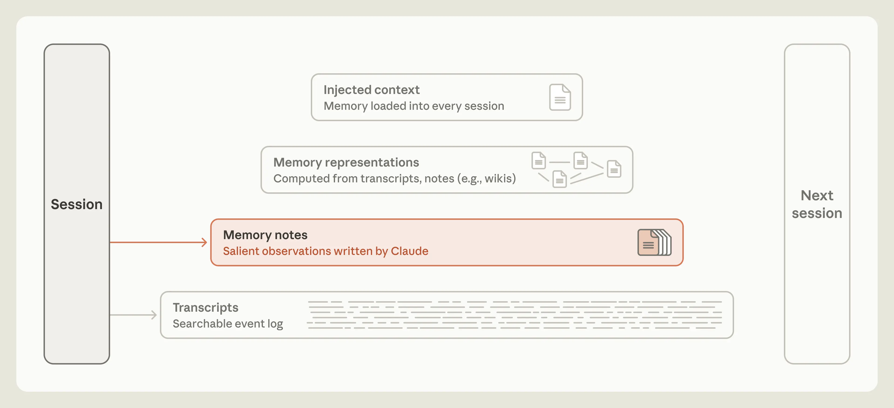
Claude can write notes to memory.Memory can be a prediction about what the future will need
Memory is, occasionally, a prediction. By writing down a rule, an agent predicts that the pattern it’s describing will be relevant again. For instance, writing down a verified fact is a prediction that an agent in a future session will want to rely on that fact without double-checking it. Over time, Claude has become much better at making these kinds of predictions. Consider a task from Continual Learning Bench (CL-Bench) 1.0, a benchmark that measures an agent’s ability to use memory in order to tackle long-horizon tasks. One particular task asks Claude to answer a series of questions by looking up information in a database. After Claude gives an answer, it’s told the correct solution and can write a memory to help answer future questions. Memory can support a learning loop here. If Claude gets a question wrong, it can record the failure, come up with theories about what went wrong, test those theories, and turn what it finds into a rule about how to answer in the future. We ran the CL-Bench 1.0 task using Claude Managed Agents. Claude started each question in a fresh session, with one exception: it could retrieve files from a memory directory that persisted from one session to the next. Different models achieved different levels of success at creating their own learning loops. Claude Sonnet 4.6 got as far as generating theories about why an answer was wrong. Its memory directory contained a scattering of files, each listing several untested guesses.
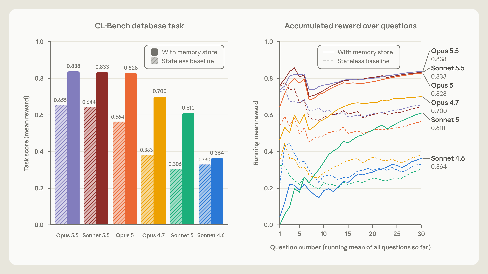
CL-Bench database task, comparing memory with a stateless baseline across models. Claude Opus 4.7 consolidated its notes into a single reference document and began marking which facts it had checked and which were still unconfirmed. Claude Sonnet 5 marked each answer as confirmed after the grader had checked it, and wrote a correction when it had answered wrong. Claude Opus 5 was the first of these models to close the loop. Most of its entries included a rule (and also how it knew the rule was true), answers to earlier questions, and clear warnings about traps it had discovered along the way (Figure 3). Like Opus 5, Claude Opus 5.5 and Claude Sonnet 5.5 both closed the loop, using memory to capture validated rules about how to best answer future questions. With memory, both scored about the same as Opus 5, though their baseline performance without memory was slightly higher.Claude has learned to judge salience
We also evaluated Claude’s ability to play Pokémon Red , a game that challenges Claude to navigate complex long-horizon tasks, as a test of Claude’s judgment about what to save to memory. At the start of each run, we gave each model a folder of memory files that it could read from and write to while it played (Figure 4).
We compared the memory folders from one run each of Claude Sonnet 3.7 and Claude Fable 5, when each was about 10,000 steps into the game. A key difference we noticed was what each model thought was worth remembering. Sonnet 3.7 assumed everything might matter and wrote to memory indiscriminately. Its memory folder contained an archive of encounters, often with a separate file for each battle it fought, each item it found, and each non-player character it met. Ultimately, Sonnet 3.7 wrote 413 memory files across 225 folders and earned one badge (badges mark a player’s progress through the game).
Fable 5, by comparison, wrote nine files in two folders, plus a single top-level file called global.md, and earned four badges.
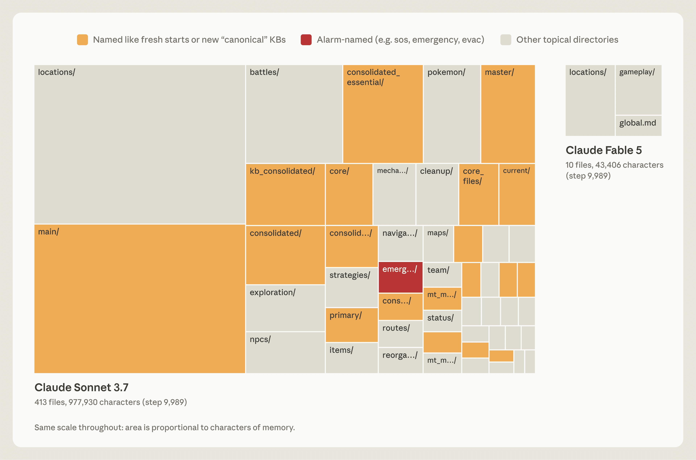
Claude’s memory directories for Sonnet 3.7 versus Fable 5 while playing Pokémon. Sonnet 3.7’s approach was a problem mainly because the game state of Pokémon changes constantly—Sonnet 3.7’s detailed record was continuously going out of date. As a result, as Claude progressed, it had to spend more time and resources combing through its memories rather than playing the game. Around step 10,000, for example, Sonnet 3.7 started its fourth folder of “master” memory files. Over the next 17 steps, it created six files, deleted nine others, and took no actions in the game itself. Fable 5’s approach used memory for things the game didn’t explicitly tell it. Some of the kinds of information Sonnet 3.7 wrote to memory—such as how much money the player has or where the player is on the map—can be read off the screen every turn, so storing it is redundant. By contrast, memory files about strategy, plans, and tested rules exist only if Claude works them out, and they disappear unless Claude writes them down. Fable 5 organized its memory accordingly. Itsglobal.md file acted as a dashboard, holding the current goal, a prewritten plan for tackling gyms (the challenges where badges are won), and the model’s own rules for using memory. A locations folder held plans for navigating particular routes, and a gameplay folder held strategies based on what it had learned about how the game works. For example, after seven Poké Balls in a row failed to catch a Magikarp (one of the easiest Pokémon to catch), Claude wrote, “If 3+ balls fail in a row, VARY the timing (insert extra ‘wait’ presses between menu steps) - the catch landed right after doing this.”
With a much smaller memory folder, Fable 5 progressed much further in the game than Sonnet 3.7. Opus 5.5 took a similar approach: it kept a small folder of memory notes that tracked its current goal and next steps, rewrote them as it played, and beat the game.
Steering Claude to write memory
We’ve found that it helps to tell Claude what memory is for, but not how to use it. On CL-Bench, we simply told Claude that a memory folder was available. That general guidance was enough for Opus 4.7 and Opus 5 to use memory effectively, and it gave both a noticeable boost in performance (Figure 3).
We also tested giving the models specific rules about what they should write to memory, with one rule per test. We compared how much each model gained from memory with each rule against how much it gained without it. When we set a rule to “record only failures,” both Opus 5 and Opus 4.7 lost much of the performance boost that memory gave them (Figure 5, right). For stronger models, giving them freedom to judge salience was more effective than setting fixed rules in advance, and those rules could end up weakening performance.
 Left: Sonnet 4.6 on the CL-Bench database task with and without prompting to guide memory usage. Right: how much each model’s gain from memory changed when it was told to record only failures.
We also noticed that steering helped older models the most. For instance, Sonnet 4.6 often didn’t read files from its memory directory and failed to test its theories about why an answer was wrong.
In this case, prompting Claude to read its memory files before answering—and then to explicitly test its theories—nearly doubled its benchmark score (Figure 5, left). Sonnet 5 does this on its own. Without being prompted to, it read its memory before answering 9 out of 10 times. By comparison, Sonnet 4.6 did this less than half of the time.
With frontier Claude models, we typically give simple guidance to create memory notes when a person asks them to or when something is clearly worth remembering, and we leave that judgment up to Claude.
Left: Sonnet 4.6 on the CL-Bench database task with and without prompting to guide memory usage. Right: how much each model’s gain from memory changed when it was told to record only failures.
We also noticed that steering helped older models the most. For instance, Sonnet 4.6 often didn’t read files from its memory directory and failed to test its theories about why an answer was wrong.
In this case, prompting Claude to read its memory files before answering—and then to explicitly test its theories—nearly doubled its benchmark score (Figure 5, left). Sonnet 5 does this on its own. Without being prompted to, it read its memory before answering 9 out of 10 times. By comparison, Sonnet 4.6 did this less than half of the time.
With frontier Claude models, we typically give simple guidance to create memory notes when a person asks them to or when something is clearly worth remembering, and we leave that judgment up to Claude.
Dreaming can correct memory
Since Claude writes to memory based on what it judges to be salient in-session, a note that’s wrong from the start or that drifts as the environment changes can be read, and trusted, by Claude in a later session.
Dreaming gives Claude a way to test its notes against the original transcripts (Figure 6). We saw a positive example of this when Claude played Pokémon using Managed Agents with a mounted directory for its memories.
 Dreaming can correct mistakes in memory.
In one part of the game, the player has to get through Mt. Moon, a cave system with its entrance on the west side of the map and its exit on the east. Near the entrance is a trap: a one-way ledge that drops the player onto the route they came from, with no clear way to climb back up. Claude was using the PokéCenter, a building at the mountain’s entrance, as a landmark, so whether it walked off the ledge depended on which side of the mountain it thought the PokéCenter was on.
At one point, Claude wrote down (incorrectly) that the PokéCenter was on the east side. When it walked out of the PokéCenter, it announced, “Mt Moon is behind me,” and updated its notes: “Mt Moon DONE.” But Mt. Moon was not behind it. A few actions later, Claude went over the ledge and landed back on the route it had come from (Figure 7). Its navigation tool didn’t show the drop, so Claude concluded, “I overshot far west,” and that it had been on the correct side all along. It hadn’t.
Dreaming can correct mistakes in memory.
In one part of the game, the player has to get through Mt. Moon, a cave system with its entrance on the west side of the map and its exit on the east. Near the entrance is a trap: a one-way ledge that drops the player onto the route they came from, with no clear way to climb back up. Claude was using the PokéCenter, a building at the mountain’s entrance, as a landmark, so whether it walked off the ledge depended on which side of the mountain it thought the PokéCenter was on.
At one point, Claude wrote down (incorrectly) that the PokéCenter was on the east side. When it walked out of the PokéCenter, it announced, “Mt Moon is behind me,” and updated its notes: “Mt Moon DONE.” But Mt. Moon was not behind it. A few actions later, Claude went over the ledge and landed back on the route it had come from (Figure 7). Its navigation tool didn’t show the drop, so Claude concluded, “I overshot far west,” and that it had been on the correct side all along. It hadn’t.
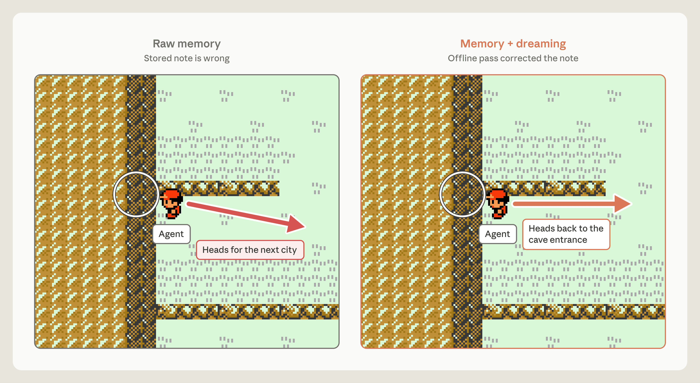
A corrected memory note changed the outcome in Pokémon. With the uncorrected note, Claude says, “Mt Moon is behind me,” heads for the next city, and ends up back on the route it came from. With the note corrected by dreaming, it says, “Now I need to find the Mt Moon cave entrance to re-enter,” and goes back into the cave. We then tested whether dreaming could help Claude avoid this trap. We ran dreaming on the memory folder that contained the wrong location for the PokéCenter: Claude checked the note against the session transcript, caught its error, and rewrote it. The transcript gave Claude a ground truth to validate its memory against. With the corrected memory note, Claude went straight back into Mt. Moon and eventually reached Cerulean City. In the run with the uncorrected note, Claude dropped back onto that earlier route three times. After the third failure, Claude seemed to give up, writing, “I’m going to stop rather than keep looping.” Our setup’s automatic reply instructed it to continue. So it did, all the way back to Pewter City, the town before the mountain, where it hoped to heal and restock. The run ended without Claude ever reaching Cerulean City.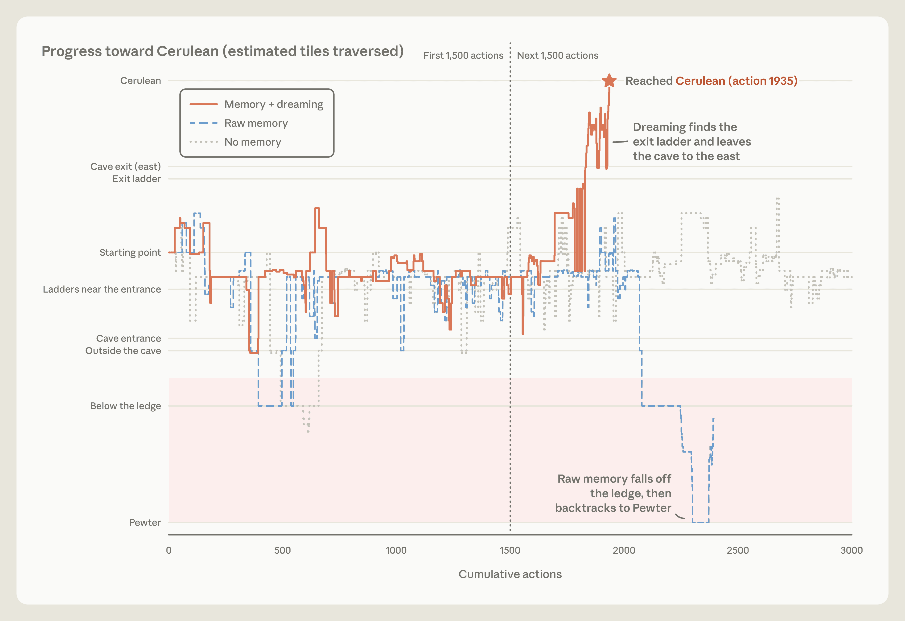
Dreaming corrects the memory, and Claude goes back into the cave and reaches the next city. The run with the uncorrected note (“Raw memory”) never gets past the mountain, and neither does the run with no memory.Dreaming can build new memory representations
With dreaming, Claude can build representations to help navigate memory (Figure 9). One type of memory representation it uses is called a wiki, a collection of pages written and maintained by Claude that gathers what Claude knows about one subject and links it to other notes. These links effectively provide Claude with a map it can use to sift through its memory and efficiently locate memories when they’re needed.
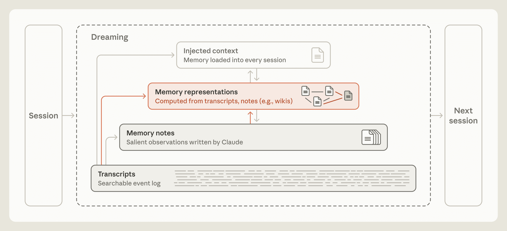
Dreaming can build memory representations. Representations like wikis can help Claude traverse its ever-growing knowledge base. We explored the benefit of wikis as a memory representation using a corpus of internal documents—about 350,000 files, roughly 420M tokens—from Stainless, a software company we acquired in May. We created an evaluation set of 25 questions about this corpus and gave Claude a search tool to explore it. We also instructed Claude to build a wiki based on these files using dreaming. Over 128 sessions, we prompted Opus 5 agents to explore the files, write or correct linked wiki pages, merge duplicates, and check claims against the sources. Each session built on the progress that agents made in prior sessions, using a shared log to coordinate work. As we scaled dreaming from two sessions to 128, performance on the 25 questions grew from 13% to 48% of graded criteria (Figure 10). Claude builds its wikis incrementally. After creating an initial wiki, it uses subsequent rounds of dreaming to add to, edit, or prune it. In the early rounds of dreaming, Claude’s knowledge is like that of a new employee, and its ability to answer questions based on the wiki alone is limited. The more it dreams, the richer its knowledge map grows, like that of a seasoned employee. In our tests, we found that the wiki helped Claude the most when we also gave it access to a search tool. When it used both search and the wiki, Claude’s aggregate score rose from 54% to 61% as that wiki grew, compared with 53% when it had access to the search tool alone. Claude’s best score was 48% when it used only the wiki to answer questions. Using search and the wiki also saved about 20,000 tokens per question. Center: scores on 25 questions about a corpus of documents from a company as Claude built wikis over sequential sessions. Left and right: an example wiki after two and 128 sessions; each dot is a page, and lines join linked pages.
We wanted to test which kinds of tasks benefited from Claude having a wiki. To do this, we used the Harvey LAB benchmark along with a collection of documents about a merger. The benchmark gives Claude a set of documents and asks Claude to generate a legal brief based on their content. The benchmark then grades the brief against a list of criteria. While a tad less engaging, perhaps, than a Pokémon run, these evaluations give us diverse collections of documents to build wikis from.
We instructed Claude to build a wiki from the documents. We then asked Claude to answer questions (about the merger) or generate legal briefs (the LAB benchmark) both from the wiki and from a direct file search. One test asked 24 questions about the merger (Figure 11, left), more than half of which needed Claude to find information across several documents, and many of which also needed Claude to use judgment or do math. On those items (red and orange lines), Claude scored 87% when it consulted the wiki, compared with 73% when it used search alone.
Center: scores on 25 questions about a corpus of documents from a company as Claude built wikis over sequential sessions. Left and right: an example wiki after two and 128 sessions; each dot is a page, and lines join linked pages.
We wanted to test which kinds of tasks benefited from Claude having a wiki. To do this, we used the Harvey LAB benchmark along with a collection of documents about a merger. The benchmark gives Claude a set of documents and asks Claude to generate a legal brief based on their content. The benchmark then grades the brief against a list of criteria. While a tad less engaging, perhaps, than a Pokémon run, these evaluations give us diverse collections of documents to build wikis from.
We instructed Claude to build a wiki from the documents. We then asked Claude to answer questions (about the merger) or generate legal briefs (the LAB benchmark) both from the wiki and from a direct file search. One test asked 24 questions about the merger (Figure 11, left), more than half of which needed Claude to find information across several documents, and many of which also needed Claude to use judgment or do math. On those items (red and orange lines), Claude scored 87% when it consulted the wiki, compared with 73% when it used search alone.
 Each panel lists what was graded (left) and the source documents needed to meet each one (right). Left: 24 questions about a merger, which can be answered by looking at mostly public filings. More than half of the criteria required combining information from several documents. Right: a LAB task where the wiki showed no clear gain. Most criteria could be met from a single document.
In other cases, the wiki was less useful. On one LAB task (Figure 11, right), brief criteria often could be retrieved with a text search from a single document, and the wiki showed no clear gain in performance relative to search. On another LAB task, the wiki grew larger than the documents themselves (Figure 12). Like the mapmakers in Borges’s one-paragraph short story “On Exactitude in Science,” who drafted a map so detailed it was as large as the empire it represented, Claude had made an extremely detailed wiki that effectively abstracted nothing.
Each panel lists what was graded (left) and the source documents needed to meet each one (right). Left: 24 questions about a merger, which can be answered by looking at mostly public filings. More than half of the criteria required combining information from several documents. Right: a LAB task where the wiki showed no clear gain. Most criteria could be met from a single document.
In other cases, the wiki was less useful. On one LAB task (Figure 11, right), brief criteria often could be retrieved with a text search from a single document, and the wiki showed no clear gain in performance relative to search. On another LAB task, the wiki grew larger than the documents themselves (Figure 12). Like the mapmakers in Borges’s one-paragraph short story “On Exactitude in Science,” who drafted a map so detailed it was as large as the empire it represented, Claude had made an extremely detailed wiki that effectively abstracted nothing.
 The wiki grew to be larger than the raw files.
The wiki grew to be larger than the raw files.
Dreaming can promote notes up the memory hierarchy
Dreaming can also float notes to the top of the memory hierarchy, and the agent harness can preemptively load them into Claude’s context at the start of every session (Figure 13). This means Claude doesn’t need to search for them, or even to know there’s something to search for.
Promoting memories into a new session (a form of context injection) must be done carefully. Injected memories use up valuable tokens, and an incorrect note can be carried into every session. Loading a note also doesn’t guarantee that Claude acts on it: our documentation on Claude Code warns that longer instruction files reduce adherence. So the top layer of the memory hierarchy has to stay relatively small, and much of dreaming’s work here is keeping it that way—by moving some details down the hierarchy and leaving links behind.
Claude Code’s auto memory keeps its injected layer small in the same way, with Claude maintaining it during the session. Claude doesn’t load all of its auto memory into every session’s context window. It loads only the first 200 lines or 25 KB of MEMORY.md. This header serves as an index, which shows Claude what it knows and where to find it.
 Dreaming can write to the top of the memory hierarchy. Injected context is loaded into every session, and the layers below it are read or searched when Claude needs them.
Dreaming can write to the top of the memory hierarchy. Injected context is loaded into every session, and the layers below it are read or searched when Claude needs them.
Dreaming can focus memory on a specific goal
Dreaming can also shape how memory grows. An assistant like Claude Duet, for example, often benefits from having memories that are organized around the person it’s helping, and dreaming can be tuned to build memory in service of a particular goal.
The instructions that guide how memory grows differ by task and tell Claude what information actually matters. For example, one task in the LAB benchmark simulates a company acquisition and provides a set of contracts. The brief is graded on whether it correctly describes the contract terms.
We started with basic instructions for generating the wiki that didn’t tell Claude how to use the wiki. This task relied heavily on contract terms. While the wiki was being built, several agents wrote to a shared table of contract terms at the same time (Figure 14, left).
 How many graded contract facts made it into the wiki, before and after instructions changed. Left: several agents writing to one shared page; 41 of 57 facts survived. Right: one agent per contract, each writing its own page and quoting terms word for word; 57 of 57 facts survived.
The result was a wiki that was missing key facts. When we graded a brief generated from the wiki, Claude had included only 41 of the 57 facts (72%). When we looked at what had gone wrong, we found that the shared table summarized the contract terms poorly and was missing some of them altogether, because agents had overwritten one another’s work.
The contract terms were the most important part of the wiki, but the instructions didn’t say that. To find better instructions, we ran a loop in which Claude reflected on its failures, proposed a change to the instructions, and rebuilt the wiki. This loop allowed Claude to discover how important it was to follow the contract terms, and it rewrote the instructions for building the wiki accordingly.
Each contract got its own page in the wiki, written by a single agent, which quoted the terms word for word rather than summarizing them into a shared table. When we graded the brief generated from this improved wiki, 100% of the criteria could be met, up from 72%.
How many graded contract facts made it into the wiki, before and after instructions changed. Left: several agents writing to one shared page; 41 of 57 facts survived. Right: one agent per contract, each writing its own page and quoting terms word for word; 57 of 57 facts survived.
The result was a wiki that was missing key facts. When we graded a brief generated from the wiki, Claude had included only 41 of the 57 facts (72%). When we looked at what had gone wrong, we found that the shared table summarized the contract terms poorly and was missing some of them altogether, because agents had overwritten one another’s work.
The contract terms were the most important part of the wiki, but the instructions didn’t say that. To find better instructions, we ran a loop in which Claude reflected on its failures, proposed a change to the instructions, and rebuilt the wiki. This loop allowed Claude to discover how important it was to follow the contract terms, and it rewrote the instructions for building the wiki accordingly.
Each contract got its own page in the wiki, written by a single agent, which quoted the terms word for word rather than summarizing them into a shared table. When we graded the brief generated from this improved wiki, 100% of the criteria could be met, up from 72%.
Dreaming can fill in gaps a session leaves behind
When Claude writes memory notes, it sees only the context in that particular session. Dreaming can search across many sessions to find common patterns or correct common mistakes.
When building the wikis for the LAB benchmark (as an example, see Figure 14), sometimes Claude would link to pages that hadn’t yet been created. A second dreaming pass closed many of these gaps. On one task (Figure 15), dreaming found nine links to a missing page in the wiki and repointed them to an existing page for the same document. It also added three new pages, including an index, to improve the wiki.
 The wiki before and after a second dreaming pass.
The wiki before and after a second dreaming pass.
Thinking backward, looking forward
There are many open questions about how to design memory systems for agents. One is when Claude should create memory. When Claude works on a task, it can write to a memory store (e.g., a folder, file, or database), capturing salience at the source and making important details immediately available for future turns or sessions. But logging notes in the moment inevitably draws Claude’s attention away from its main task. In contrast, dreaming can push memory creation to the background, but any outputs from dreaming may not be immediately accessible to Claude. Another question is how to keep memory reliably up to date. Claude can make incorrect predictions or write rules to memory that are wrong from the start. Memory can also drift and become irrelevant as the environment changes. Dreaming is one way to fix these mistakes (Figure 8), but it requires compute. Directing Claude to continuously check all its memories might not be practical. It may be important instead to focus dreaming on information that’s likely to change or to carefully tune the cadence of dreaming (e.g., based on how often memories are accessed). It’s also reasonable to consider transcript search as the foundation of Claude’s memory. Combining representations (e.g., wikis) with search (Figure 10) can sometimes be effective. But Claude needs to use compute to maintain memory representations and make sure they don’t accumulate errors or hallucinations. Even though Claude’s judgment about salience has improved, no model can really know what will happen in future turns. Dreaming gives Claude an opportunity to look backward and use compute to organize its memory, correct mistakes, and maintain representations that allow future sessions to access memory more readily. Memory systems will evolve as Claude gets more capable, and we still have a lot to learn about designing Claude’s memory systems. See our cookbooks for getting started with dreaming and knowledge wikis.
Authors & acknowledgements
Acknowledgements
Written by Lance Martin with editorial guidance from Caitlin Love, Tom Chivers, Rebecca Hiscott, Jake Eaton, and Blake Wilson. We’re grateful to Barry Zhang, Theodora Chu, Daliang Li, Mahesh Murag, Jake Noble, Ravi Trivedi, Tina Vachovsky, Brad Abrams, Henry de Valence, Jeremy Fox, Matt Bell, Allen Li, Chris Gorgolewski, Eugene Yan, Artur Renault, Wei Zhang, and Kevin Chen for helpful discussions and contributions, and to David Hershey for Claude Plays Pokémon. Figures by Monika Tuchowska.